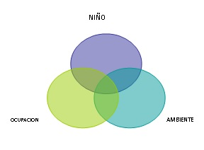
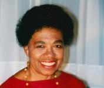

Desarrollo y ocupación
• Revisar los conceptos de desarrollo y ocupación en Terapia Ocupacional
en Pediatría.
• Analizar la relación entre el desarrollo del niño y el desarrollo ocupacional.
• Analizar los factores que inciden en el desarrollo ocupacional.
Facilitar la participación en la ocupación es el objetivo por excelencia
de la Terapia Ocupacional (AOTA, 2002). Al trabajar con niños, nuestro
interés se centra en la manera en que su desarrollo influye y determina
su mundo ocupacional.
Para esta práctica profesional, es necesario conocer el desarrollo del
niño y las actividades típicas de la niñez. Las teorías del desarrollo
describen los cambios que se producen durante el ciclo vital en las distintas
áreas que organizan el comportamiento del niño, por ejemplo el desarrollo
motor, el desarrollo cognitivo o el desarrollo emocional.
En nuestra práctica no solamente debemos tener en cuenta esta variable
sino que debemos relacionarla con las variables individuales y particulares
de cada niño y su entorno. Comprender las relaciones persona (niño)-ambiente-ocupación,
comprender los patrones de actividad de cada niño y su familia, y el valor
que cada ocupación representa son elementos esenciales en el razonamiento
clínico que permitirá una intervención adecuada a las necesidades del niño.
Repasemos algunos de estos conceptos generales para poder partir de una
base común y luego desarrollar las características ocupacionales del niño
en las distintas áreas.
1.1. Principios generales del desarrollo y la ocupación
En primer lugar, es importante definir el término desarrollo a diferencia de crecimiento y maduración, ya que muchas veces se utilizan en forma indistinta.
Crecimiento es un proceso biológico cuantitativo determinado por la proliferación celular, y que se pone de manifiesto en el aumento de la talla, el peso y el volumen del cuerpo.
Maduración es un proceso de características biológicas, determinado genéticamente e impulsado por factores externos. Es un proceso de cambio cualitativo por el cual un órgano, sistema o estructura se complejiza y alcanza niveles superiores de funcionamiento. Por ejemplo, la maduración de las vías visuales que además de los cambios predeterminados a nivel genético, maduran gracias a los estímulos externos como la luz.
En relación con el desarrollo, podemos decir que es un proceso progresivo y temporal que facilita el despliegue de las diferentes funciones y la coordinación entre las mismas. Iris Shapira y Enriqueta Roy (2002) lo definen como las transformaciones globales que conducen a adaptaciones cada vez más flexibles.
Los principios generales del desarrollo descriptos por distintas teorías son los siguientes:
| Principios generales del desarrollo |
|
(Adaptado de Mulligan,S. Terapia Ocupacional en Pediatría, 2006.)
De acuerdo a Adriana García, el desarrollo se define como:
(…) el proceso por el cual el niño adquiere conductas propias de un ser humano: organiza su psiquismo, se introduce en un sistema de comunicación, adquiere diferentes tipos de posturas y desplazamientos, manipula objetos, despliega actividades simbólicas, juegos y conductas inteligentes, así como adquiere los hábitos y conductas propias de su grupo de convivencia, de la comunidad y la sociedad en la que vive.
(…) el desarrollo depende tanto del nivel madurativo y de las estructuras biológicas como de los estímulos que provienen del entorno, de las oportunidades de exploración, ejercitación y acción que este entorno proporcione y permita (García, 2011: 24).
Al decir de Gary Kielhofner, a lo largo de la infancia se producen extensas transformaciones que permitirán que el niño emerja como ser ocupacional con formas personales de sentir, pensar y hacer.
A medida que experimentan haciendo cosas, surgen sus intereses, elecciones, la conciencia de sus habilidades y de su eficacia.
García (2011) plantea la existencia de factores de desarrollo, entendiéndolos como cualquier elemento o fenómeno que incide en ese proceso. Pueden ser positivos o negativos. Los clasifica en cuatro grupos:
- Factores facilitadores del desarrollo, considerando todo lo que promueve el despliegue de las capacidades del niño.
- Factores de riesgo para el desarrollo, considerando todos aquellos factores o situaciones que aumentan la probabilidad de alterar el proceso del desarrollo.
- Factores obstaculizadores del desarrollo, como aquellos que desorganizan o inhiben el desarrollo y causan efectos que pueden revertirse si se modifican las condiciones que los originan o sostienen.
- Factores perturbadores del desarrollo, que provocan un impacto traumático en el desarrollo del niño.
García, A. (2011), "Capítulo 2: Factores del Desarrollo" en: La influencia del entorno en el desarrollo del niño, Ed. Cinco, Buenos Aires, pp. 23-25.
1.
a. Señale cuatro ejemplos que se correspondan con los factores de desarrollo descritos.
b. Determine de qué manera inciden en el desarrollo del niño.
El repertorio ocupacional del individuo no es estático, va cambiando durante los distintos ciclos de la vida. Es lo que se denomina desarrollo ocupacional.
Según la Canadian Association of Occupational Therapists (CAOT) (1997), el desarrollo ocupacional se define como “el cambio gradual de las conductas ocupacionales a través del tiempo, resultado del crecimiento y maduración del individuo en interacción con el ambiente”.
Canadian Association of Occupational Therapists.
Según Jane Davis y Helene Polatajko, podemos pensar el desarrollo ocupacional en tres niveles: nivel de la ocupación, nivel del individuo y nivel de las especies.
- El nivel de la ocupación se relaciona con la competencia ocupacional, es decir, la progresión desde la novedad hasta el dominio de una ocupación.
El niño que aprende a andar en bicicleta, primero lo hará con las ruedas laterales hasta tanto adquiera la coordinación suficiente y el equilibrio como para hacerlo sin ellas. En un primer momento andará trechos cortos, rectos, y luego se animará a realizar trechos más largos, sortear obstáculos, andar a mayor velocidad y hasta realizar alguna pirueta. Es decir que con el tiempo y la práctica irá dominando esa ocupación.
- El nivel del individuo hace referencia a las ocupaciones que un individuo realiza en un momento específico de su vida. Implica un corte a nivel temporal y la descripción de las ocupaciones del niño en ese momento.
A los cinco años el niño realiza múltiples actividades en distintas áreas de la ocupación: tareas de autocuidado que incluyen lavarse los dientes, lavarse las manos; tareas escolares como realizar actividades grafoplásticas, hacer ejercicio físico, jugar con sus compañeros; actividades recreativas en el hogar como mirar la televisión, jugar con sus juguetes, andar en bicicleta, entre otras.
- El nivel de la especie se relaciona con los cambios en las ocupaciones en el curso de la historia de la humanidad. Por ejemplo, los juegos en los años cuarenta y los juegos actuales. Si bien es la misma ocupación (juego), adquiere características diferentes de acuerdo a los cambios tecnológicos, los recursos disponibles, el tiempo otorgado a dicha ocupación, el entorno físico y el social.
Davis, J. y Polatajko, H. (2006), "The occupational development of children", en: Occupational Therapy with children, understanding children´s occupations and enabling participation, Blackwell publishing, pp. 136-155.
2.
Mencione dos ejemplos de cada uno los niveles de desarrollo anteriormente descriptos.
El desarrollo en la niñez es un proceso dinámico y de cambio permanente, por lo tanto las ocupaciones también irán cambiando. Algunas irán modificándose y complejizándose, otras desaparecerán para dar lugar a nuevas ocupaciones acordes al estadío de desarrollo y a los roles que debe desempeñar.
Los cambios en la ocupación no solo tendrán relación con el desarrollo del propio niño sino también con su entorno, que constituye un factor de gran importancia en el desarrollo de las ocupaciones en la niñez.
Según Humphry (2005) dicho desarrollo recibe influencia de tres factores particulares: las prácticas de crianza y el entorno comunitario que proveen oportunidades ocupacionales; las influencias sociales y las interacciones personales relacionadas con la actividad; y el proceso de autoorganización que subyace al compromiso en las ocupaciones.
De esta manera, dos niños de la misma edad evolutiva y similares destrezas madurativas, pueden desarrollar una misma ocupación de manera diferente, por ejemplo vestirse. La observación y la imitación son procesos fundamentales, así como también las expectativas y exigencias del entorno que van moldeando el desarrollo de las ocupaciones.
La manera en que fue enseñada la actividad, el valor que se le otorga en el seno familiar y social, las experiencias positivas o no del niño durante el aprendizaje de dicha actividad, el tipo de ropa que debe utilizar, la organización personal para realizar la actividad y sus habilidades y dificultades marcarán las diferencias en las características de la ocupación en cada uno.
1.2. Principios generales de los enfoques del desarrollo de las ocupaciones que se utilizan en Terapia Ocupacional
A continuación desarrollaremos brevemente algunos de los enfoques que se utilizan en nuestra práctica:
1.2.1. Modelo de desarrollo de las Ocupaciones del niño
Este modelo desarrollado por Jane Case-Smith (2005) plantea tres componentes fundamentales para pensar las ocupaciones en la niñez: el niño, las tareas, actividades y ocupaciones, y el ambiente. Y postula que para comprender el desempeño de un niño, es necesario conocer la interacción entre estos tres elementos.
Jane Case-Smith (1953-2014). Investigadora y profesora. Tuvo como interés la investigación y enseñanza de la terapia ocupacional para el beneficio de los niños y sus familias. Dirigió el Laboratorio de Rehabilitación Pediátrica y el Departamento de Terapia Ocupacional en la Universidad Estatal de Ohio. Publicó el libro Occupational Therapy for Children y fue redactora de Occupational Therapy Journal of Research (OTJR). (Fuente de la imagen: < http://ajot.aota.org/article.aspx?articleid=1934878>).

Con relación al niño se consideran los factores individuales (funciones y estructuras corporales), sus habilidades personales o componentes del desempeño (habilidades motoras, de procesamiento y de comunicación e interacción), y espiritualidad, que se combinan y lo convierten en un ser interactivo que puede comprometerse en una relación dinámica con sus ocupaciones y su ambiente.
Las ocupaciones son todo aquello que el niño realiza, que incluyen combinaciones de tareas y actividades que tienen un sentido para él, y que reflejan las expectativas del entorno. Si bien podemos describir ocupaciones típicas en cada etapa del ciclo vital, la manera en que cada niño las realiza y el sentido que adquieren es único y particular.
El ambiente es considerado el contexto de la ocupación, que puede facilitar o no la acción del niño. En el apartado 1.3. nos detendremos en lo referente al entorno.
La adquisición de distintas habilidades, capacidades y funciones permitirán que el niño vaya comprometiéndose en las ocupaciones que le son típicas de acuerdo a su nivel madurativo. Así, gracias a la aparición de la prensión fina, el desarrollo de las nociones espaciales y la coordinación visomotora, entre otras habilidades, el niño podrá comenzar a tomar la cuchara y llevarse el alimento a la boca al año aproximadamente.
Por otro lado, gracias a su compromiso en las ocupaciones, irá a su vez desarrollando mayores capacidades e irá haciéndose más hábil en su desempeño. La alimentación irá tomando distintas formas y haciéndose cada vez más autónoma, segura y precisa. El niño podrá llenar su cuchara y llevarla a la boca sin volcar y sin ensuciarse la cara a partir de los dos años.
Podemos decir entonces que el compromiso y la participación del niño en ocupaciones es a la vez facilitador del proceso de desarrollo y efecto del mismo.
Nuestra perspectiva como terapistas ocupacionales se centra en analizar e intervenir en la manera en que el niño desempeña ocupaciones significativas en su contexto. Para ello es necesario conocer el proceso del desarrollo en la niñez desde las distintas teorías ya que proveen una base fundamental para comprenderlo. Pero nuestra intervención no se remite solamente a ello, sino que debemos focalizarnos en la manera en que dicho desarrollo se traduce en la ocupación del niño.
1.2.2. Marco de referencia del desarrollo
Lela Llorens (1970) describió este marco de desarrollo centrado en los aspectos físicos, sociales y psicológicos que se ponen en juego en las ocupaciones y relaciones cotidianas, basándose en los conceptos y lineamientos de autores como Gesell, Freud, Erikson, Havinghurst y Piaget.

Lela A. Llorens, OTR, PhD, Profesora Emérita del Departamento de Terapia Ocupacional de la Universidad del Estado de San José; Profesora Adjunta, División de Ciencia Ocupacional y Terapia Ocupacional, Universidad de Southern California. Su extensa carrera profesional de más de 50 años incluyó la investigación, la experiencia clínica, la autoría de distintos libros y la docencia. Desde su retiro en 1996, continúa contribuyendo a la profesión como consultante. (Fuente de la imagen: <http://www.sjsu.edu/occupationaltherapy/faculty/faculty_bios/>).
Definió diez premisas fundamentales que sostienen su visión del desarrollo:
- El organismo humano se desarrolla horizontalmente/simultáneamente en áreas de crecimiento neurofisiológicas, físicas, psicológicas y psicodinámicas, desarrollo del lenguaje social, destrezas socioculturales, inteligencia y destrezas de la vida diaria durante todo el ciclo vital.
- El organismo se desarrolla longitudinalmente/cronológicamente en cada una de las áreas durante el ciclo vital.
- El dominio de las destrezas en cada área es necesario para enfrentarse con éxito a situaciones y relaciones adaptativas.
- El dominio generalmente se logra de manera natural en el curso del desarrollo.
- La dotación de cada individuo y el estímulo de las experiencias recibidas en el ambiente familiar y social interactúan y promueven el crecimiento y desarrollo.
- Las influencias de la familia, los grupos comunitarios, sociales y cívicos ayudan al proceso de crecimiento.
- El trauma físico o psicológico por enfermedad, lesión, deprivación ambiental o vulnerabilidad intrapersonal puede interrumpir el proceso de crecimiento y desarrollo.
- La interrupción del crecimiento causará una interferencia en el desarrollo produciendo una disparidad entre las conductas adaptativas esperadas y las destrezas requeridas para las mismas.
- La Terapia Ocupacional a través de la aplicación de actividades y relaciones,
puede proporcionar lazos de crecimiento y desarrollo que disminuyan la
interferencia entre las expectativas y las habilidades,
incrementando las destrezas en todas las áreas y en forma horizontal y longitudinal. - La Terapia Ocupacional, a través de la aplicación de actividades y relaciones, puede proporcionar experiencias para prevenir la maladaptación relacionada con la estimulación insuficiente en las distintas áreas del desarrollo.
La premisa fundamental es que hay dos perspectivas para observar al niño: el desarrollo horizontal y el desarrollo longitudinal, que ocurren en forma simultánea y en un continuo.
Si tomamos en cuenta el desarrollo horizontal, podemos decir que las ocupaciones a una edad estarán determinadas por el nivel de destrezas y habilidades de desempeño logradas hasta ese momento. Las mismas se combinarán para dar lugar a un desempeño ocupacional específico.
En la actividad de vestido se pondrán en juego ciertas habilidades motoras y procesales a los cuatro años diferentes a las que se utilizan a los seis. A los cuatro años es esperable que un niño pueda desvestirse solo, se ponga pulóveres con ayuda ocasional para ubicar derecho y revés, se ponga pantalones sin subir cierres, se calce pero sin atar los cordones. A los seis años es esperable que haya adquirido mayor independencia a excepción de abrochar o subir cierres en la parte posterior de las prendas. Ello quiere decir que las funciones relacionadas con el movimiento voluntario como la coordinación, la integración bilateral, el cruce de la línea media, el control motor fino así como las funciones mentales como atención, percepción y pensamiento se han desarrollado y son en ese momento más específicas lo cual se traduce en un desempeño ocupacional más hábil.
El desarrollo longitudinal permitirá que una habilidad de desempeño se vaya perfeccionando en el tiempo, y eso se plasmará en las distintas ocupaciones a medida que van complejizándose.
El niño de tres años podrá abotonar los botones grandes de sus prendas, mientras que a los cinco años podrá abotonar los pequeños gracias a una mayor destreza y habilidad en las prensiones finas y la coordinación fina.
A partir del crecimiento y la maduración y, en consecuencia, la evolución de los facilitadores del desempeño ocupacional (habilidades), el niño se va comprometiendo en actividades, tareas y roles del desempeño ocupacional que le son significativos, lo cual permite una adaptación exitosa al ambiente.
Simon, C. (2009), “Marco de referencia del desarrollo" en: Terapia Ocupacional (Willard Spackman), Panamericana, Buenos Aires, pp. 71-73.
Elnora M. Gilfoyle y cols. (1981) definen la adaptación como el continuo ajuste de los procesos corporales a las demandas del ambiente, sucediendo como una interacción entre un individuo y un ambiente de tiempo y espacio. Mientras que Kielhofner define la adaptación ocupacional como la construcción de una identidad ocupacional positiva y el logro de una competencia ocupacional en el contexto del propio medio ambiente.
Llorens define a la Terapia Ocupacional como un proceso facilitador que ayuda al individuo a lograr el dominio en tareas vitales y enfrentarse eficientemente a las expectativas de la vida, especialmente cuando se presenta alguna interrupción en el desarrollo o disfunción.
1.3. Características de los contextos y entornos del desempeño ocupacional del niño
Es imposible desconocer el impacto que genera el ambiente en el desarrollo del niño y en sus ocupaciones. Desde el modelo persona-ambiente-ocupación se distinguen dos ámbitos de intervención a nivel del contexto: un nivel micro que se centra en el entorno cercano e inmediato del niño, y un nivel macro que engloba la organización comunitaria, las políticas y acciones sociales.
La American Occupational Therapy Association (AOTA) en el Marco de Trabajo para la práctica de Terapia Ocupacional (2010) diferencia contextos y entornos, y los define como la variedad de condiciones circundantes y dentro del cliente (niño) que se interrelacionan e influyen en su desempeño.
American Occupational Therapy Association, <http://www.aota.org/>
Los contextos son aquellos relacionados con la persona y los que la rodean, e incluyen las dimensiones personal, cultural, temporal y virtual. Los entornos son aquellos en los que tienen lugar las actividades de la vida diaria, el físico y el social. Los describiremos brevemente.
1.3.1. Contexto personal
El contexto personal es el conjunto de “características demográficas del individuo tales como la edad, el género, el nivel socioeconómico y el nivel educativo que no forman parte de su condición de salud” (AOTA, 2010).
Estas variables van a determinar claramente las ocupaciones que el niño realizará en su ámbito familiar y social. La edad marca qué ocupaciones son las esperables para el niño de acuerdo a su momento evolutivo, así como también el género. Si bien no se hace una distinción específica de ocupaciones para el niño y la niña, algunas de ellas están implícitas en las organizaciones sociales y en lo esperable para cada una de ellas.
El nivel socioeconómico es una variable que delimita los roles y ocupaciones esperadas en los distintos grupos sociales, promoviendo o alentando algunas de ellas, y desconociendo o no otorgando importancia a otras. Así, de acuerdo al grupo social al cual pertenezca una familia, configurará en algunos aspectos los patrones ocupacionales de ese grupo primario y del niño en particular.
De acuerdo a Moldes y Pellegrini, el nivel educativo puede relacionarse con las etapas escolares que cada sociedad determina como adecuadas.
1.3.2. Contexto cultural
El contexto cultural “incluye las costumbres, creencias, patrones de actividad, comportamientos estándar y expectativas dentro del ámbito social al que pertenece un miembro” (AOTA, 2010).
Tomando a Kielhofner, podemos decir que este patrón de comportamiento a nivel grupal se transmite de generación en generación, y es el que aporta los parámetros y maneras de hacer que permiten al niño relacionarse con el medio.
Dicho patrón varía de familia en familia, de comunidad en comunidad, de región en región. El niño aprenderá las distintas ocupaciones, el valor que adquiere cada una, los roles que debe desempeñar como niño y los que desempeñará como adulto a partir de la transmisión de su grupo primario.
En cada cultura existen una variedad de subculturas a su vez que mostrarán diferencias marcadas e influyen en la organización de los distintos grupos.
Este contexto adquiere actualmente una importancia trascendental para los terapistas ocupacionales, ya que en nuestra sociedad conviven numerosas culturas, lo cual implica que también convivirán distintas identidades culturales, con costumbres, creencias religiosas, maneras de realizar las mismas ocupaciones, hábitos cotidianos, valores acerca de las actividades, roles asignados y estructuras familiares muy diversas.
La interculturalidad es un proceso dinámico y permanente de relación, de comunicación y aprendizaje entre culturas en condiciones de legitimidad mutua y que se construye entre personas y grupos, conocimientos y prácticas culturalmente distintas.
Es de fundamental importancia para nuestra práctica conocer las costumbres, percepciones, normas, valores y creencias de las familias de distintas culturas con las cuales trabajamos, ya que es esencial respetar su identidad cultural.
Un ejemplo claro son las prácticas de crianza. En algunos casos los niños duermen en la cama con los padres hasta edades avanzadas y ello no es considerado erróneo como en nuestra cultura, sino como una conducta de cuidado y protección de los padres con el niño.
1.3.3. Contexto temporal
El contexto temporal alude a la “ubicación del desempeño ocupacional en el tiempo. (…) Incluye las etapas de la vida, los momentos del día o el año, la duración, el ritmo de la actividad o la historia” (AOTA, 2010).
En la niñez, el contexto temporal está en principio marcado por el adulto, que es quien define los ritmos de las actividades, los momentos del día en que se realizan, la secuencia de las mismas y su duración. Por ejemplo, en un bebé, es la mamá quien marca los momentos de la comida, los momentos de sueño, el momento del baño. Algunas de estas actividades se inician de acuerdo a los tiempos del propio bebé, cuando tiene hambre, llora pidiendo alimento. Pero dada su condición de indefensión inicial, es el adulto quien lo alimenta. Esto marca una total dependencia para la supervivencia, y en esa dependencia, estar a expensas de los tiempos y formas en que el adulto puede responder a sus necesidades.
A medida que el niño crece y adquiere una mayor autonomía, esos tiempos y ritmos de actividad podrán ir tomando un matiz más personal, pero en la niñez, siempre dependientes del entorno que marcará la distribución de las ocupaciones en el día o la semana, la frecuencia, la duración.
Asimismo, de acuerdo a la etapa de la vida, aparecerán o se favorecerán ocupaciones valoradas, o se desestimarán otras. Por ejemplo, es sabido que un niño debe adquirir el control de esfínteres entre los dos y tres años, o dejar la mamadera y comenzar a tomar líquidos en vaso a partir de los dos años.
En nuestra práctica es importante tener en cuenta este factor, pero no debe de ninguna manera convertirse en el principio rector que dirija nuestra intervención. Si bien conocer las pautas madurativas y las etapas evolutivas del niño nos dará el marco general de su desarrollo, debemos saber que no siempre se adquieren las habilidades o hitos del desarrollo a las edades descriptas. Ello se debe muchas veces a la acción de factores obstaculizadores, y no por ello el niño presenta un “retraso en el desarrollo”, sino que no ha tenido las oportunidades o experiencias necesarias para adquirirlas o desarrollarlas, para lo cual es necesario tener en cuenta, conocer y analizar los otros contextos y entornos.
1.3.4. Contexto virtual
El contexto virtual “se refiere a las interacciones en situaciones simuladas, en situaciones de tiempo real o cercanos al tiempo, en ausencia de contacto físico. (…) Escenario en el que la comunicación se produce por ondas o computadoras, en ausencia de contacto físico” (AOTA, 2010).
El rápido desarrollo de la tecnología de las comunicaciones y del entreteniemiento a través de las computadoras y otros dispositivos ha generado un alto impacto en la interacción de los niños con su entorno en muchos de los grupos sociales.
En primer lugar por el tipo de interacción, que ha cambiado desde la relación directa y presencial con pares a través del juego, actividades deportivas o de tiempo libre a juegos individuales o grupales pero a través de los dispositivos tecnológicos. Ello repercute en la manera de relacionarse con otros, incluso el tipo de juego virtual repercute claramente en el desarrollo de habilidades y destrezas motrices, que abordaremos en la unidad de juego.
Los niños en general pasan mucho tiempo utilizando estos dispositivos, ya sea para jugar o comunicarse. En muchas familias, este tipo de actividad es segura en tanto el niño permanece en su casa, y también es cómoda en tanto el niño puede jugar solo o con otros pero sin necesitar de la compañía de los padres.
1.3.5. Entorno físico
El entorno físico comprende el “ambiente natural y construido no humano y los objetos dentro de este” (AOTA, 2010).
Las características del ambiente no humano que rodea al niño podrá ser estimulante, y de esa manera funcionará como motor para lograr algunas destrezas. A su vez, la diversidad y riqueza de ambientes y de objetos también contribuirán al desarrollo.
La progresiva conquista que el niño hace del espacio físico durante su desarrollo es un claro ejemplo. Los primeros juegos y exploraciones se realizan en lo que se llama espacio primitivo o bucal, es decir la aproximación de sus manos o de los objetos a la boca. El espacio próximo o de agarre es aquel hasta donde llegan los brazos extendidos del niño pequeño, el juego pasando objetos de una mano a la otra, o sentado en el piso tomando los objetos cercanos. El espacio lejano podrá constituirse en la medida que el ambiente sea atractivo, genere curiosidad en el niño, y este presente interés en los objetos existentes en él. Ello lo llevará a querer alcanzarlos, para lo cual deberá desplazarse o pedirlos a un adulto, desarrollando distintas habilidades.
El ambiente físico puede ser uno de los factores más importantes en la participación del niño en las ocupaciones, tanto a nivel facilitador como ofreciendo barreras. Una plaza es un ambiente facilitador para niños en edad de socializar con pares, en un juego con otros, cooperativo. Pero a su vez puede ofrecer barreras de participación a un niño que presenta alguna dificultad a nivel motriz que le impide utilizar los juegos.
A medida que el niño crece se van sumando ambientes físcos en los cuales realiza distintas ocupaciones: su hogar, la guardería, la escuela, el barrio, la casa de sus abuelos, la plaza, entre otros. Ello implica que el niño se desempeña en ambientes diversos, con características diferentes y objetos específicos diferenciados que deberá conocer, aprender a manejar y dominar.
Por otro lado, tendemos a rodearnos de los objetos que reflejan nuestros intereses, actividades y valores, es decir, reflejan quiénes somos. En los niños pequeños, la disponibilidad y el acceso a los objetos está a cargo de los padres.
1.4. Demandas de la actividad
Las demandas de la actividad son aquellas características específicas o requisitos que condicionan o influyen en el desempeño ocupacional del niño. De acuerdo al Marco de Trabajo para la Práctica de Terapia Ocupacional, las demandas de la actividad incluyen:
- Los objetos necesarios y sus propiedades.
- Los requerimientos del espacio físico para realizar la actividad.
- Las demandas sociales relacionadas con el entorno sociocultural.
- La secuencia de los pasos necesarios para completar la actividad y el tiempo.
- Las acciones requeridas y las destrezas de ejecución.
- Las funciones del cuerpo requeridas.
- Las estructuras corporales requeridas.
A partir del análisis de la actividad se detectan cada una de estas demandas, y se puede intervenir para que el encuentro entre el niño y la actividad sea placentero, posible y satisfactorio, en términos que el niño pueda realizarla de acuerdo a sus habilidades.
Para poder realizar este proceso es necesario conocer el desarrollo madurativo. Sin embargo, las ocupaciones en la niñez pueden complicarse. Limitaciones propias o enfermedades pueden impactar directamente en las hablidades del niño para comprometerse y realizar actividades, así como también los ambientes disfuncionales o poco estimulantes influyen directamente sobre la ocupación.
AOTA. (2010), "Demandas de la actividad. Tabla 3" en: Marco de Trabajo para la Práctica de Terapia Ocupacional. Dominio y Proceso (2da edición), en <www.terapia-ocupacional.org> , pp. 21-22.
4.
A partir de la lectura obligatoria, determine las demandas de la actividad “Colorear un dibujo”.
1.5. Roles durante la niñez
Charles Christiansen y Christine Baum (1997) definieron el rol como un conjunto de conductas que tiene una función determinada y un código de normas aceptadas socialmente. Un rol también es considerado como una función en la sociedad, que implica responsabilidades asignadas.
Kielhofner trae el concepto de rol internalizado, que implica adoptar una identidad, un perfil y las acciones que pertenecen a ese rol.
Pueden dividirse en:
- roles familiares, referidos a los roles en la familia (hijo, hermano, nieto, etc.).
- roles personales sexuales, es decir, los relacionados con el género.
- roles ocupacionales, que se refieren a aquellos determinados por la cultura y que representan las ocupaciones de los individuos, grupos y comunidades (maestro, médico, artista, etc). Implican un patrón ocupacional y se identifican por su posición social y las tareas implícitas de dicho rol.
El desempeño de los roles implica, en primer lugar, conocer y comprender cuáles son las acciones esperadas, llevarlas a cabo y reconocerse en esa identidad ocupacional a partir de la satisfacción personal y el entorno interpersonal.
1.5.1. La adquisición de los roles durante la niñez
Los roles son dinámicos, se van adquiriendo y reemplazando durante todo el ciclo vital, incluso se van modificando permanentemente. Están relacionados con la edad, la experiencia, las circunstancias de la vida, el tiempo.
La adquisición de los roles implica un proceso que se basa en destrezas ya adquiridas y en sus transformaciones, necesarias para asumir las demandas de los nuevos roles. El niño en edad escolar debe cumplir ciertas demandas a los seis años al ingreso a primer grado, diferentes a las de un niño en séptimo grado, si bien sigue desempeñando el rol de estudiante.
Cada persona desempeña varios roles simultáneos, que llevan implícitas obligaciones y actividades específicas. Los niños gradualmente van incrementando la cantidad de roles que asumen en la medida que comienzan a interactuar en un entorno más amplio que el de la familia.
Es esperable encontrar en un niño los roles de hijo, hermano, jugador, escolar, amigo, entre algunos otros, pero estos adquieren características diferentes según distintas variables.
La edad marcará una diferencia importante: los niños no juegan de la misma manera a los cuatro meses que a los tres años o a los diez. Será esperable un desempeño específico en cada uno de esos momentos del ciclo vital.
El ámbito en el cual el niño vive o la organización social de su entorno también imprimirá diferencias. Hay niños que tienen como función cuidar a hermanitos menores, por lo tanto el rol de cuidador que no es esperable para ese grupo etario se hace presente y adquiere una importancia especial para el grupo familiar.
Los roles en la niñez varían de acuerdo al entorno familiar, social y cultural de cada niño, si bien podemos decir que existen algunos roles típicos. Debemos indagar acerca de la dinámica familiar y no dar por sentados los roles que un niño desempeña.
1.6. La familia y las ocupaciones del niño
Según Ruth Humpry y Jane Case-Smith (2001), las funciones de la familia incluyen: la provisión de afecto y sostén emocional, la promoción de la socialización y la participación en ocupaciones fuera del ámbito familiar, la promoción de oportunidades de recreación, y conductas saludables e independientes en el autocuidado, y la estimulación de la educación y el desarrollo del potencial productivo.
Para comprender cómo una familia lleva adelante sus funciones es interesante pensarla como un sistema dinámico e interactivo. Esta visión surge de la Sociología, la Antropología y otras ciencias sociales.
Podemos tomarla como un grupo de individuos con ocupaciones interrelacionadas. Los cambios ocupacionales en uno de sus integrantes afectarán seguramente a todos sus miembros. Cuando un niño en edad escolar debe hacer tareas en casa, requerirá de la ayuda o compañía de algún adulto que lo ayude, lo cual a su vez, implicará cambios en la organización de las ocupaciones de ese adulto durante el día.
Los distintos miembros de la familia comparten en forma interactiva distintas coocupaciones en las que el niño que presenta menores habilidades puede participar con un desempeño más sofisticado que si realizara la ocupación por sí mismo. Por ejemplo, en la actividad de vestido de un niño pequeño, cuando intenta colocarse una remera, la mamá lo asiste ubicando adecuadamente la prenda y organizando los distintos pasos, nombrando las partes del cuerpo que debe utilizar, asistiendo en el movimiento algunas veces y acomodando la prenda para que pueda finalizar la tarea.
La familia crea el contexto ocupacional primario del niño, dado que es en ese ámbito en el que el niño aprenderá las ocupaciones significativas para ese grupo.
Las elecciones en relación a los juguetes, a las actividades familiares, la organización de las rutinas, la calidad de experiencias, los recursos con que cuenten, serán factores que impactarán directamente sobre el desarrollo del niño y sobre su desarrollo ocupacional.
Asimismo, las rutinas que se establecen en el interior de cada familia contribuyen a la identidad común de cada uno los miembros ya que ordenan y significan las distintas actividades que realizan, se define quién hace qué, cuándo y cómo, y además se determina si es eficiente o no a partir de las normas y reglas que establece para esa actividad.
La aprobación o desaprobación de los padres u otras personas cercanas acerca de sus acciones irá marcando la valoración social del hacer ciertas cosas y otras no, lo cual influirá en las elecciones ocupacionales.
Las familias varían de acuerdo a su estructura y a su estilo de vida. Humphry y Case-Smith clasifican diversos tipos de familia: nucleares (con ambos padres), parejas parentales separadas, familias ensambladas, familias extendidas (parientes que pueden o no vivir en la misma casa), y familias aumentadas (incluyen personas que no son parientes pero son muy cercanas a la familia por el vínculo).
El estilo parental es otro factor importante a observar, relacionado con el estilo particular de cada indviduo en el cuidado del niño y el grado de control que utiliza sobre él.
Por otro lado, es común encontrar que muchos niños quedan al cuidado de otros por la necesidad de trabajar de los padres, o pasan gran parte de su tiempo diario en la escuela u otras actividades.
Sabemos que en muchos casos el contexto ocupacional que ofrece el entorno no es el más adecuado. Muchas veces no estimula su desarrollo, y otras lo obstaculiza, dejándolo en una situación de vulnerabilidad en la que es necesario intervenir.
Otras veces no contamos con una familia que actúe de sostén, por lo cual hace falta encontrar referentes que puedan acompañar al niño en su proceso de desarrollo y que aseguren las mejores condiciones posibles para que esto suceda.
La situación social y económica, los valores y creencias, la cultura, y las costumbres son elementos que contribuyen a la singularidad de una familia.
Es importante recordar los conceptos de riesgo, vulnerabilidad, resiliencia y factores protectivos para poder comprender la dinámica interna familiar y las ocupaciones.
Riesgo se refiere a factores internos o externos que incrementan la posibilidad de la ocurrencia de algún evento no deseado.
Vulnerabilidad hace referencia a las características de la familia que permiten protegerse o quedar expuesta a los efectos negativos de un riesgo.
La resiliencia es la habilidad del niño o la familia de resistir los efectos de los riesgos o factores negativos. Es un concepto importante para Terapia Ocupacional, ya que no es la enfermedad o la discapacidad la que determina el desempeño del niño, sino su resiliencia y la de su familia para hacer frente a los eventos negativos.
Los factores de protección son las características que el niño o la familia ponen en juego en la respuesta al riesgo o estrés. Werner, citado por Ellen Rainville, describe tres factores:
- las características del niño que favorecen la interacción con el entorno
- una familia contenedora que facilite la confianza, iniciativa e independencia
- sistemas de sostén ambiental que estimulen la competencia, capacidad y los valores positivos.
Cuando hay un niño con alguna disfunción, muchas veces se convierte en el centro de atención de la familia. Ello produce que las ocupaciones se organicen en torno a él, por lo cual las ocupaciones de otros miembros de la familia como los hermanos o padres queden relegadas y en segundo término.
En cualquier intervención que hagamos con un niño es imprescindible el trabajo permanente y conjunto con la familia con una responsabilidad mutua compartida. Ello implica que de acuerdo a las necesidades y dificultades que la familia detecta se planifican en forma conjunta las áreas a trabajar, y los cambios que se generan durante el tratamiento deben ser sostenidos por la familia en el hogar.
1.6.1. Impacto de la disfunción del niño en los padres
Cuando una pareja espera un hijo, en general le asigna un nombre, lo imagina, proyecta cómo será en el futuro, elige cosas para él, le asigna y le prepara un lugar en la casa.
Cuando el niño que nace lo hace con alguna problemática, los padres deben hacer el duelo por el hijo imaginado. No es una tarea sencilla porque implica no sólo aceptar las nuevas características sino que éstas vienen de la mano de alguna disfunción que lo afecta.
El diagnóstico médico y el pronóstico suelen determinar lo que los padres pueden esperar de su hijo, aunque es importante saber que nadie puede predecir el futuro de un niño en desarrollo. A veces la transmisión de esta información por parte de los profesionales es tan categórica que es tomada como la verdad absoluta por parte de los padres.
El hecho de que el niño presente algún déficit genera en los padres una serie de sentimientos como culpa, enojo, angustia o tristeza que determinan la manera en que se establecerán los vínculos con el niño.
Humpry y Case-Smith afirman que el impacto que puede generar un niño con discapacidad en la familia depende de varios factores: la edad y las habilidades del niño, el significado de la disfunción o problemática para los padres o el entorno, la motivación y habilidades del adulto para hacer frente a las dificultades del niño y el significado que los padres otorguen a las actividades de cuidado del niño.
El tipo de disfunción que el niño presenta y la forma de aparición también son factores que inciden fuertemente. Varios autores han descripto etapas en el proceso que realiza la familia en relación a una disfunción en uno de sus niños:
- Shock inicial: ante la aparición de la disfunción y al recibir el diagnóstico. Puede ser irruptiva o sorpresiva, o gradual. En muchos casos y aunque no haya diagnóstico médico, la familia va percibiendo que algo ocurre en el desarrollo.
- Negación y alivio: el alivio se produce cuando desaparece la sensación de incertidumbre por no saber qué le ocurre al niño. La negación se relaciona con minimizar los efectos o consecuencias de la enfermedad en curso, el diagnóstico o el pronóstico, y sostener expectativas poco realistas acerca del futuro del niño. Ello no quiere decir que no acepten el diagnóstico sino que refleja la esperanza de la familia por su mejoría.
- Asumiendo: los padres dejan la imagen del niño sano y desarrollan otra nueva con sus habilidades y limitaciones
- Aceptación: la familia se reorganiza, y su foco principal es resolver las dificultades.
En este proceso la familia ampliada y otras personas cercanas se convierten en una importante red de sostén social para la familia.
A partir de las etapas que atraviesa la familia en relación al proceso de aceptación de una disfunción en el niño, ¿cómo le parece que pueden impactar en las ocupaciones cotidianas del niño y la familia?
En general se describen muchas conductas parentales, pero existen dos puntualmente importantes a tener en cuenta dado que suelen generar dificultades:
La sobreprotección implica que el adulto considere que el niño es incapaz de realizar actividades, o que requiere asistencia permanentemente, lo que resulta en que hagan todo por él. Si bien con un bebé el adulto actúa de esta manera, es esperable que gradualmente vaya dejando lugar para que el niño se vaya conviertiendo en un ser más autónomo. Lo que encontramos en los padres sobreprotectores es que sostienen la dependencia del niño y no permiten que adquiera habilidades o que a pesar de tenerlas no se desempeñe en actividades acordes a ellas en forma independiente.
Un niño de 4 años llega a consulta de Terapia Ocupacional porque presenta un retraso en el desarrollo, con un diagnóstico de parálisis obstétrica. En la evaluación presenta ciertamente habilidades motoras correspondientes a una edad menor. Presenta un buen desempeño ocupacional en el juego y en las actividades preescolares, pero un desempeño significativamente menor a lo esperable en las AVD. En la entrevista con la madre, ella refiere que en la casa ella lo baña, lo alimenta y lo viste ya que como tiene una mano que no puede usar, no puede arreglarse solo.
Por otro lado, la negación es una conducta mucho más compleja, con efectos importantes en la constitución del niño. Implica que el adulto no puede aceptar al niño, y reacciona de manera evitativa con él. No necesariamente quiere decir que no lo quiera o no lo cuide, sino que tiene dificultades para implicarse afectivamente con él.
Una mamá que asiste a una entrevista de admisión por su hija de 3 meses de edad, con diagnóstico de Síndrome de Down, cuenta que al momento del parto el médico le dio el diagnóstico y le dijo que nunca iba a ser una nena como otras porque tenía retraso mental. La mamá refiere que la bebé tiene rasgos diferentes a otros chicos, y le parece tan ajena a ella que no puede mirarla. Es una mamá que jamás ha descuidado las necesidades básicas de la bebé, pero no la mira, no le habla ni puede jugar con ella.
Estas dos conductas descriptas son las más extremas, pero cada padre genera distintas reacciones a partir de sus emociones, sus experiencias y su historia de vida, por lo cual podemos encontrar una gran diversidad. Es fundamental trabajar con los padres, dado que estas conductas tendrán un gran impacto en el desarrollo del niño y en el desarrollo de sus ocupaciones.
1.6.2. Práctica centrada en la familia
El trabajo con la familia no se centra en dar indicaciones para el hogar, sino que el profesional valora, estimula y refuerza el compromiso y la participación de la familia en la planificación e implementación de servicios, respetando sus prioridades y necesidades.
Los padres y otros miembros de la familia son las personas más consistentes en los primeros años de vida del niño, y son quienes saben acerca de él. Reconocer a cada familia como diferente y única implica que cada una tiene un proceso de aprendizaje, formas de sostén y comunicación particulares que debemos conocer y respetar, dejando de lado nuestras expectativas acerca de cómo debería ser esa familia y cómo debería comportarse.
Los miembros de la familia no deben convertirse en terapeutas, ya que el vínculo que los une al niño es otro, son sus padres, hermanos, abuelos. Pero sí es importante poder trabajar juntos en pos del mejor desarrollo del niño.
Los ejes fundamentales de esta práctica son establecer un buen vínculo de confianza con la familia, proveer información adecuada y útil, respetar la diversidad y la particularidad de cada familia, ofrecer servicios flexibles, accesibles y en respuesta a las necesidades, y habilitar a los padres a tomar las decisiones relacionadas con el bienestar y el tratamiento de su hijo.
Conclusión
A partir de los conceptos que se han ido desarrollando en esta primera unidad, ya contamos con elementos generales para poder abordar las ocupaciones de la niñez.
La manera en que impacta el entorno del niño en el desarrollo de sus ocupaciones, el rol de la familia como sostén, modelo y facilitadora de espacios de aprendizaje de actividades y roles significativos son dos de los ejes fundamentales que debemos tener en cuenta en la observación, evaluación e intervención en la niñez.
5. Actividad integradora de la unidad
A partir del siguiente recorte, realice un análisis de la situación teniendo en cuenta los ejes y conceptos trabajados en la unidad.
Alan. 4 años.
Único hijo de una mamá soltera migrante que trabaja en un taller de costura de 8 a 20 hs diariamente. Alan no asiste a la escuela, permanece con ella mientras trabaja en un espacio reducido a su lado. Si bien la mamá le lleva algunos juguetes (auto/revistas), no se muestra interesado en los objetos y permanece pasivo.
Como lenguaje presenta palabras sueltas, algunas fuera de contexto. Parece hablar por lo bajo, pero no se entiende lo que dice. Establece escaso contacto visual con la mamá, se dirige a ella cuando necesita algo pero en general realiza gestos o señala lo que quiere. La madre suele interpretar y responder. Es un niño que presenta torpeza motora para la edad, no tiene habilidades exploratorias y no recorre el espacio. No participa en juegos corporales. Es dependiente en las AVD.
Viven en una pequeña habitación, sin baño privado, y duermen en un colchón de una sola plaza. Si bien la madre ha hecho lazo con algunas otras mujeres en situación similar, sólo cuenta con una prima que vive lejos, a la que ve esporádicamente. Alan no tiene contacto con otros niños de su edad.
El niño ha tenido escasos controles de salud, pero a causa de una otitis realiza una consulta al pediatra en un hospital público, y es quien deriva a Terapia Ocupacional para evaluación y tratamiento por retraso madurativo.